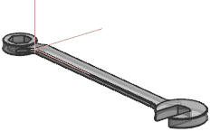
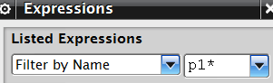

重命名表达式
-
打开 exp3_wrench_2。

-
按下 Ctrl+E 以打开表达式对话框。
-
如果需要，点击更多选项
 。
。 -
在列出的表达式列表中，选择按名称过滤。
-
在列出的表达式列表旁的过滤器输入框中，键入 p1* 并回车。

只有那些名称以 p1开头的表达式将显示在表达式列表框中。
-
选择 p14(基准平面 (6) 偏置)。
-
在名称输入框中。键入 Offset 作为新名称并回车。
表达式 p14将被重命名为 Offset，由于它不再满足 p1*的过滤准则，因此不会再显示在表达式列表框中。
如果有表达式引用之前的表达式 p14，那么也会自动将它们更新以引用新的名称。
-
在列出的表达式列表中，选择命名的，注意到表达式 Offset 将显示在表达式列表框中。
注释
如果您将表达式重命名为与系统表达式类似的名称，比如 p36，系统仍然会将其识别为命名的表达式。